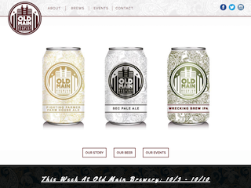
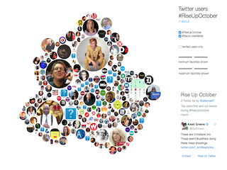

Web Projects
In the last few years, I've had the chance to work on some different web projects as I work to better learn developing and design for the web. Web development has quickly become one of my favorite types of programming, and I hope to have more examples up here soon. If you're interested in checking out my GitHub which hosts this site and any of the projects you see on this page, you can do so here. Hope you like what you see!

OMB Website Freelance Project
Freelance project for an up-and-coming College Station, TX brewery. I designed 5 different webpage templates as mockups and then implemented the designs in HTML5, CSS3, and Javascript. You can find each of the templates hosted here on my site, while the site itself prepares to launch later in 2018.

Twitter Data Visualization - Rise Up October
Final project for an Interactive Information class. This website takes pre-fetched tweet data from the Rise Up October movement and provides a visualization for the most popular users in the movement with their tweet and profile data. Involves HTML, CSS, JavaScript, and D3.